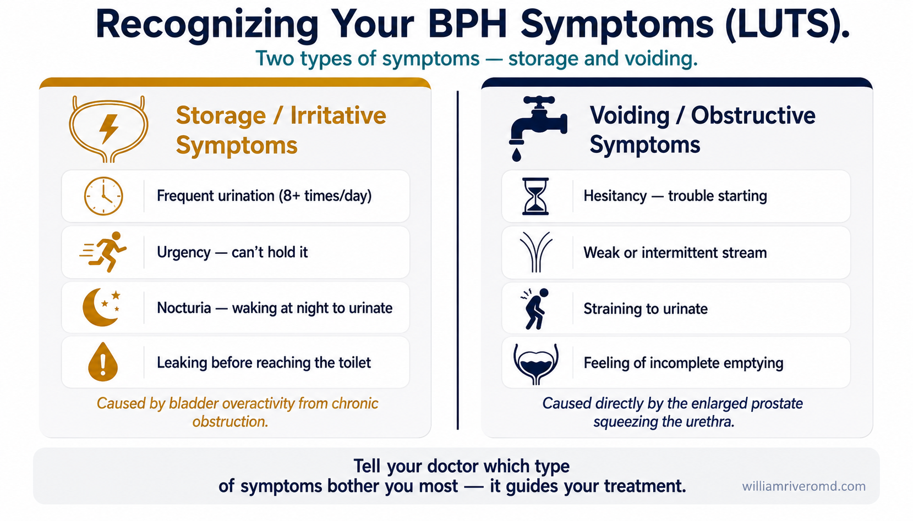
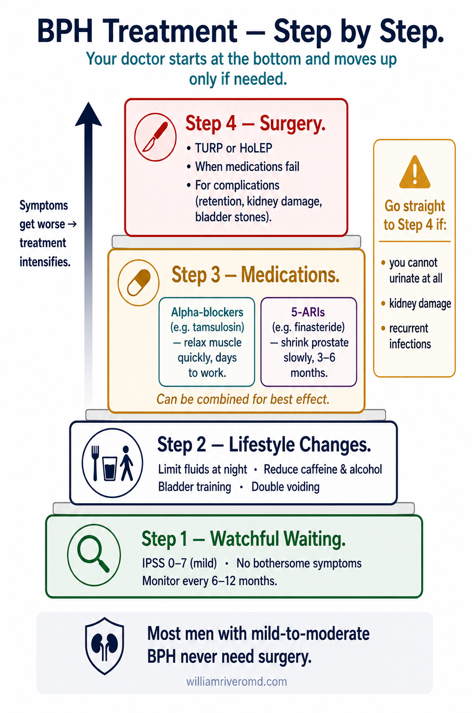
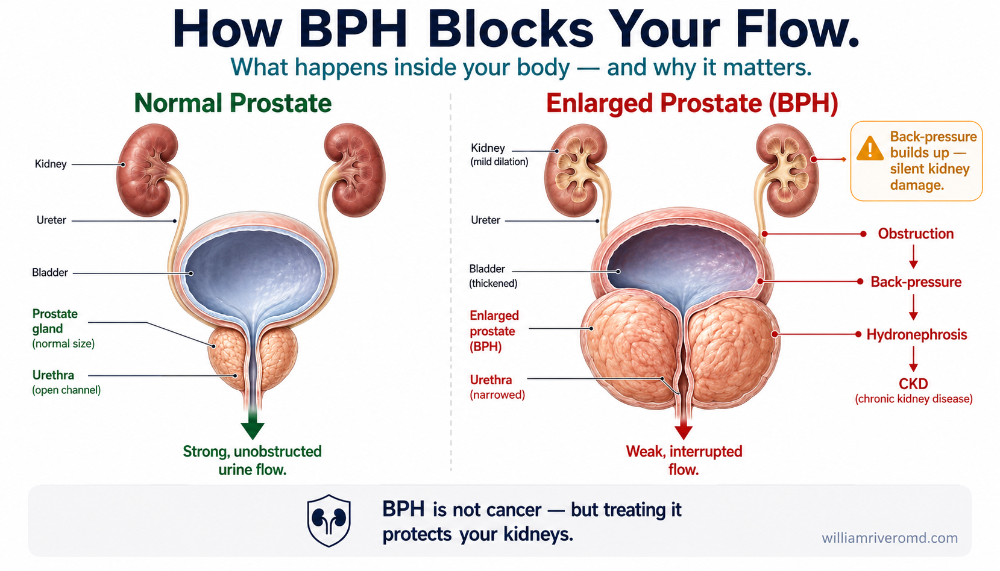
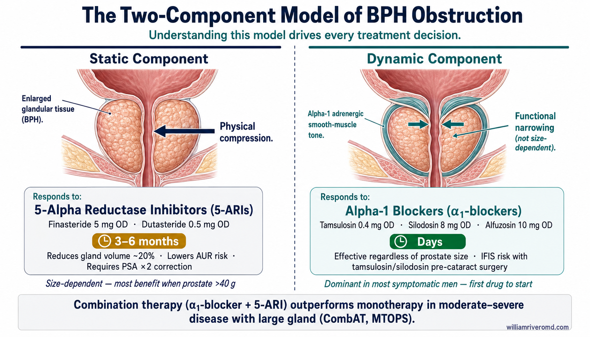
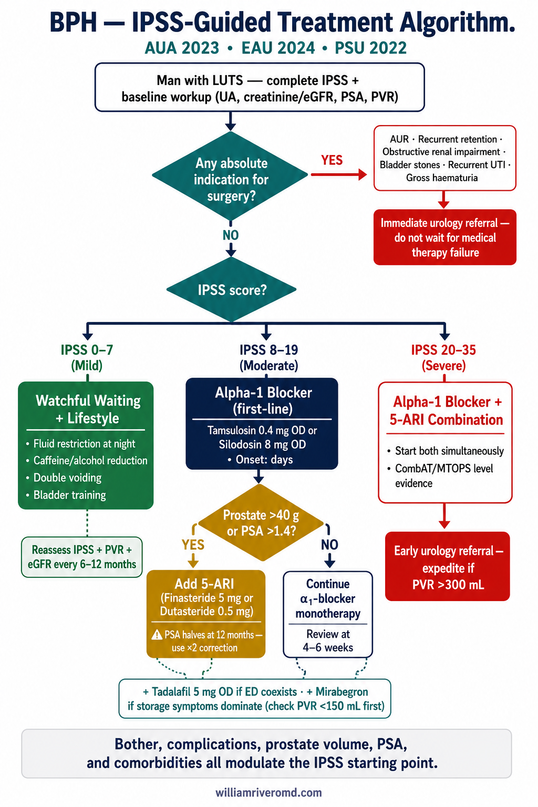
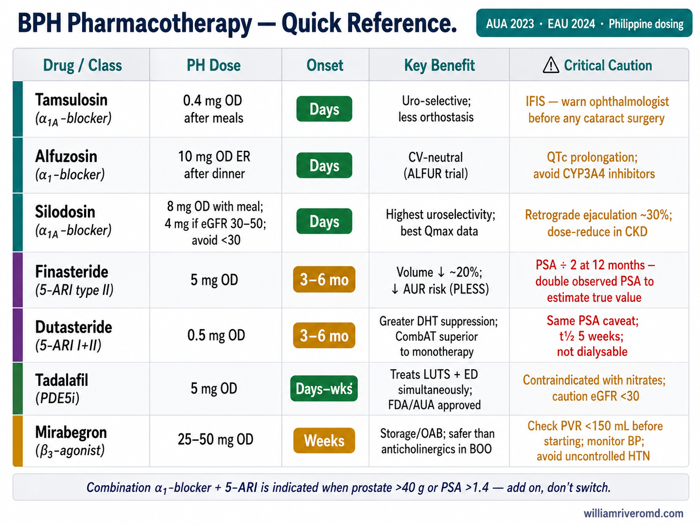
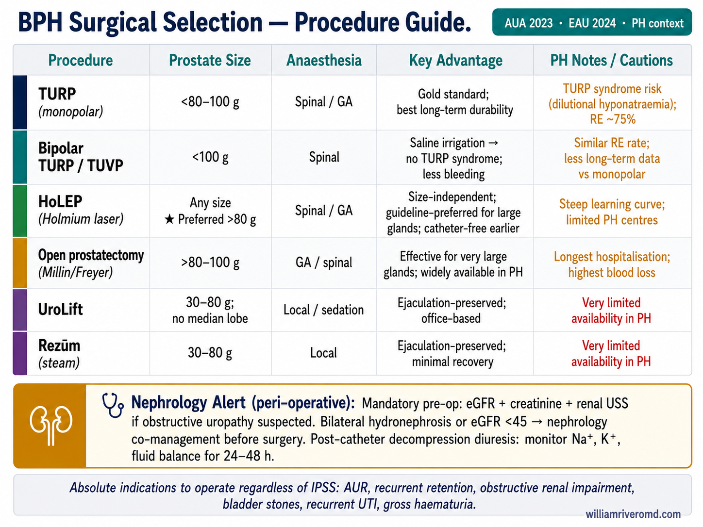

What Is Benign Prostatic Hyperplasia?Ano ang Benign Prostatic Hyperplasia?Unsa ang Benign Prostatic Hyperplasia? Nanu ya ing Benign Prostatic Hyperplasia?
![Prostate Enlargement — A Complete Guide for Patients: what BPH is, common symptoms (frequent urination, weak stream, dribbling, urgency), risk factors (age, family history, obesity, inactivity, diabetes), when to see a doctor, diagnostic workup (IPSS, DRE, urine, PSA, ultrasound, uroflowmetry), treatment options (lifestyle, medications, surgical), lifestyle and diet tips, possible complications (urinary retention, bladder stones, UTI, kidney damage), and key reassurances that BPH is not cancer and is treatable](../images/prostate-enlargement-overview.webp)
An overview poster covering the whole BPH journey — what an enlarged prostate is, its common urinary symptoms, risk factors, when to see a doctor, the tests used, treatment options, possible complications, and the reassurance that BPH is not cancer and is treatable.
The prostate gland surrounds the urethra just below the bladder. As men age, the prostate naturally enlarges — a process called benign prostatic hyperplasia (BPH). The enlarging gland squeezes the urethra, making it harder to urinate. By age 60, over 50% of Filipino men have BPH; by age 85, over 90% are affected. It is not cancer — but untreated, it can damage the kidneys.Ang prostate gland ay nakapaligid sa urethra nang direkta sa ibaba ng pantog. Habang tumatanda ang mga lalaki, ang prostate ay natural na lumalaki — isang prosesong tinatawag na benign prostatic hyperplasia (BPH). Pinipiga ng lumalaking gland ang urethra, na nagpapahirap sa pag-ihi. Sa edad 60, mahigit 50% ng mga Pilipinong lalaki ay may BPH; sa edad 85, mahigit 90% ang apektado. Hindi ito cancer — ngunit kung hindi ginagamot, maaari itong makasama sa mga bato.Ang prostate gland naglibot sa urethra direkta sa ilalom sa pantog. Samtang nagtigulang ang mga lalaki, ang prostate natural nga nagdako — usa ka proseso nga gitawag og benign prostatic hyperplasia (BPH). Ang nagdakong gland nagpisog sa urethra, nga nagpabudlay sa pag-ihi. Sa edad 60, kapin sa 50% sa mga Pilipinong lalaki adunay BPH; sa edad 85, kapin sa 90% ang apektado. Dili kini cancer — apan kung dili gamuton, mahimong makadaot sa mga kidney. Ing prostate gland ya napaligiran king urethra a diriktang manak king pantog. Kalugud tumanda deng lalaki, ing prostate ya natural a lumakbe — metung a proseso a tawagan benign prostatic hyperplasia (BPH). Pinipiga ning lumakbing gland ing urethra, a maglisud king pag-ihi. King edad 60, mahigit 50% deng Pilipinong lalaki atin BPH; king edad 85, mahigit 90% deng apektado. Ali ya cancer ini — ngan nung ali gagamulan, malyari yang makasama king deng batu.
BPH silently damages kidneys through back-pressure long before patients report significant urinary symptoms. PSA testing and kidney function (creatinine + ultrasound with post-void residual) should be checked in all men with LUTS. Chronic obstruction → back-pressure → hydronephrosis → silent CKD.Ang BPH ay palihim na nagpapasama sa mga bato sa pamamagitan ng back-pressure na matagal bago pa man mag-ulat ang mga pasyente ng makabuluhang sintomas ng ihi. Dapat suriin ang PSA testing at kidney function (creatinine + ultrasound na may post-void residual) sa lahat ng lalaki na may LUTS. Talamak na obstruction → back-pressure → hydronephrosis → tahimik na CKD.Ang BPH hilom nga nagdaot sa mga kidney pinaagi sa back-pressure dugay pa sa wala pay pasyente nga nag-report sa makisabutan nga sintomas sa ihi. Ang PSA testing ug kidney function (creatinine + ultrasound nga adunay post-void residual) kinahanglan susihon sa tanan nga lalaki nga adunay LUTS. Kronikong obstruction → back-pressure → hydronephrosis → hilom nga CKD. Ing BPH ya palihim a sumira king deng batu paagi king back-pressure, matagal bago pa man magreklamo deng pasyente ning makabuluang sintomas king pag-ihi. Dapat suriin ing PSA testing at kidney function (creatinine + ultrasound a atin post-void residual) king amin a lalaki a atin LUTS. Maragul a obstruction → back-pressure → hydronephrosis → tahimik a CKD.
Mechanical obstructionMekanikal na obstructionMekanikal nga obstruction Mekanikal a Obstruction
The enlarged prostate physically compresses the urethra — like squeezing a garden hose. This increases the effort needed to start urination, reduces urine flow rate, and prevents complete bladder emptying (post-void residual urine).Ang pinalaking prostate ay pisikal na pinipiga ang urethra — tulad ng pagpiga ng garden hose. Nagdaragdag ito ng pagsisikap na kailangan upang magsimulang umihi, binabawasan ang bilis ng daloy ng ihi, at pinipigilan ang kumpletong pag-aalisan ng pantog (post-void residual urine).Ang nagdakong prostate pisikal nga nagpisog sa urethra — sama sa pagpisog sa garden hose. Nagdugang kini sa paningkamot nga gikinahanglan aron magsugod sa pag-ihi, nagpubos sa rate sa agos sa ihi, ug nagpugong sa kumpleto nga pag-uyog sa pantog (post-void residual urine). Ing lumakbing prostate ya pisikal a pigpigan ing urethra — nung nanu ing pagpiga king garden hose. Dagdag ini ning pagsusukul a kailangan ban masimulang umihi, bawasan ing bilis ning agus ning ihi, at pigilan ing kumplutung paglabas king pantog (post-void residual urine).
Dynamic componentDinamikong bahagiDinamikong bahin Dinamiku a Bahagi
Smooth muscle in the prostate and bladder neck contracts in response to alpha-1 adrenergic stimulation — this is the "dynamic" obstruction component. Alpha-1 blockers target exactly this, providing rapid symptom relief independent of prostate size.Ang makinis na kalamnan sa prostate at leeg ng pantog ay nagkukumusto bilang tugon sa alpha-1 adrenergic stimulation — ito ang "dinamiko" na bahagi ng obstruction. Ang mga alpha-1 blocker ay nakatutok dito, nagbibigay ng mabilis na pagpapagaan ng sintomas na malaya sa laki ng prostate.Ang smooth muscle sa prostate ug leeg sa pantog nagkontrata isip tubag sa alpha-1 adrenergic stimulation — kini ang "dinamiko" nga bahin sa obstruction. Ang mga alpha-1 blocker nagtutok niini, naghatag og dali nga paghupay sa sintomas nga wala'y kalabutan sa gidak-on sa prostate. Ing makinis a kalamnan king prostate at leeg ning pantog ya kukontrata bilang tugon king alpha-1 adrenergic stimulation — ini ing "dinamiku" a bahagi ning obstruction. Deng alpha-1 blocker ya nakatutok king ini, nagbigyan ning mabilisang kaginhawaan ning sintomas a ali mekaugnayan king laki ning prostate.

A chart sorting the urinary symptoms of BPH into two groups: storage symptoms (urgency, frequent urination, night-time urination, and leaking) and voiding symptoms (hesitancy, a weak stream, straining, and incomplete emptying).
Symptoms — The LUTS SpectrumMga Sintomas — Ang Spectrum ng LUTSMga Sintomas — Ang Spectrum sa LUTS Deng Sintomas — Ing Spectrum ning LUTS
BPH causes a constellation of symptoms collectively called Lower Urinary Tract Symptoms (LUTS). They are divided into storage (irritative) and voiding (obstructive) symptoms.Ang BPH ay nagdudulot ng grupo ng mga sintomas na sama-samang tinatawag na Lower Urinary Tract Symptoms (LUTS). Nahahati ang mga ito sa storage (irritative) at voiding (obstructive) na mga sintomas.Ang BPH nagdulot og grupo sa mga sintomas nga kolektibo nga gitawag og Lower Urinary Tract Symptoms (LUTS). Nabahin kini sa storage (irritative) ug voiding (obstructive) nga mga sintomas. Ing BPH ya magdulut ning bunggus ning deng sintomas a kapangalinan tawagan Lower Urinary Tract Symptoms (LUTS). Nabahin deng ini king storage (irritative) at voiding (obstructive) a sintomas.
Storage / Irritative symptomsMga Storage / Irritative na sintomasMga Storage / Irritative nga sintomas Deng Storage / Irritative a sintomas
Urgency (sudden, strong urge to urinate that is hard to defer), frequency (urinating more than 8 times per day), nocturia (waking 2+ times at night to urinate), urge incontinence (leaking urine before reaching the toilet). These result from bladder overactivity caused by chronic obstruction.Urgency (biglaang malakas na pagnanasang umihi na mahirap pigilan), frequency (pag-ihi nang higit sa 8 beses sa isang araw), nocturia (pagising nang 2+ beses sa gabi para umihi), urge incontinence (pagtulaboy ng ihi bago makarating sa banyo). Nagmumula ang mga ito sa labis na aktibidad ng pantog dahil sa talamak na obstruction.Urgency (kalit nga kusog nga tinguha sa pag-ihi nga lisod pugngan), frequency (pag-ihi kapin sa 8 ka higayon matag adlaw), nocturia (pagmata 2+ ka higayon sa gabii para mag-ihi), urge incontinence (pagtulo sa ihi sa wala pa makaabut sa banyo). Kini naggikan sa sobrang aktibidad sa pantog tungod sa kronikong obstruction. Urgency (bigla at maragul a pigbu ban umihi a maliwat pigilanan), frequency (pag-ihi lubus king 8 beses king metung a aldo), nocturia (paggisnan 2+ beses king bengi ban umihi), urge incontinence (magtulo ning ihi bago pa makarate king banyu). Galing deng ini king labes a aktibidad ning pantog kaibatan ning maragul a obstruction.
Voiding / Obstructive symptomsMga Voiding / Obstructive na sintomasMga Voiding / Obstructive nga sintomas Deng Voiding / Obstructive a sintomas
Hesitancy (difficulty starting urination), weak or intermittent stream, straining to urinate, prolonged voiding time, feeling of incomplete emptying, terminal dribbling. These result directly from urethral obstruction by the enlarged prostate.Hesitancy (kahirapan sa pagsisimulang umihi), mahina o hindi tuloy-tuloy na daloy, pag-uugis para umihi, matagal na oras ng pag-ihi, pakiramdam na hindi kumpleto ang pag-ihi, terminal dribbling. Ang mga ito ay direktang nagmumula sa obstruction ng urethra ng pinalaking prostate.Hesitancy (kalisud sa pagsugod sa pag-ihi), huyang o intermittent nga agos, paningkamot sa pag-ihi, taas nga oras sa pag-ihi, pagbati nga dili kompleto ang pag-uyog, terminal dribbling. Kini direkta nga naggikan sa obstruction sa urethra sa nagdakong prostate. Hesitancy (kalugud magsimula umihi ay lisud), maluya o ali tuluy-tuluy a agus, pag-uugis ban umihi, matalagal a uras ning pag-ihi, pakiramdam a ali kumpletu ing pag-ihi, terminal dribbling. Deng ini ya diriktang galing king obstruction ning urethra ning lumakbing prostate.
The IPSS — measuring your symptom severityAng IPSS — pagsukat ng kalubhaan ng inyong sintomasAng IPSS — pagsukat sa kabug-at sa imong mga sintomas Ing IPSS — pagsukat ning kasindakan ning inyu sintomas
Your doctor uses the International Prostate Symptom Score (IPSS) — a 7-question questionnaire — to grade BPH severity. Mild = 0–7; Moderate = 8–19; Severe = 20–35. Your score guides treatment intensity and monitors treatment response over time. Tracking your score at each visit provides objective evidence of improvement or progression.Ginagamit ng inyong doktor ang International Prostate Symptom Score (IPSS) — isang 7-tanong na talatanungan — upang i-grade ang kalubhaan ng BPH. Banayad = 0–7; Katamtaman = 8–19; Malubha = 20–35. Ginagabayan ng inyong score ang intensity ng paggamot at sinusubaybayan ang tugon sa paggamot sa paglipas ng panahon.Gigamit sa imong doktor ang International Prostate Symptom Score (IPSS) — usa ka 7-pangutana nga questionnaire — aron i-grade ang kabug-at sa BPH. Banayad = 0–7; Katamtaman = 8–19; Grabe = 20–35. Ang imong score naggiya sa intensity sa pagtambal ug nagmonitor sa tubag sa pagtambal sa paglabay sa panahon. Gagamitin ning inyu doktor ing International Prostate Symptom Score (IPSS) — metung a 7-tanong a talatanungan — ban i-grade ing kasindakan ning BPH. Banayad = 0–7; Katamtaman = 8–19; Maragul = 20–35. Gineganapan ning inyu score ing intensity ning paggamut at sinusubaybayan ing tugon king paggamut kalabasan ning panahon.
International Prostate Symptom Score (IPSS) International Prostate Symptom Score (IPSS) International Prostate Symptom Score (IPSS) International Prostate Symptom Score (IPSS)
This is the same validated questionnaire your urologist uses to grade your BPH severity and monitor your response to treatment. Answer each question based on your experience over the past month. There are no right or wrong answers — honest responses give the most useful result. Ito ang parehong napatunayang talatanungan na ginagamit ng inyong urologist upang i-grade ang kalubhaan ng inyong BPH at subaybayan ang inyong tugon sa paggamot. Sagutin ang bawat tanong batay sa inyong karanasan sa nakalipas na buwan. Kini mao ang samang napatunayang questionnaire nga gigamit sa imong urologist aron i-grade ang kabug-at sa imong BPH ug i-monitor ang imong tubag sa pagtambal. Tubaga ang matag pangutana base sa imong kasinatian sa miaging buwan. Ini ing parehong napatunayang talatanungan a ginagamit ning inyu urologist para i-grade ing kabug-at ning inyu BPH at subaybayan ing inyu tugon king paggamut. Sagutin ing balang tanong batay king inyu karanasan king nakalipas a bulan. Ali ya atin maluat o malimbong a sagot — ing matapat a pagsagot ya magbigay ning pinakamayap a resulta.
Not at allHindi kailanmanWala gayod Ali kailanman
Less than 1 in 5 timesMas mababa sa 1 sa 5Menos sa 1 sa 5 Mas mababa king 1 king 5 a beses
Less than half the timeMas mababa sa kalahatiMenos sa katunga Mas mababa king kalahati ning oras
About half the timeMga kalahati ng orasMga katunga sa oras Manga kalahati ning oras
More than half the timeHigit sa kalahatiLabaw sa katunga Labi king kalahati ning oras
Almost alwaysHalos palagiHalos kanunay Halos palagi
⚕ Bring your score to your next appointment. Your IPSS guides treatment decisions and helps track whether medications are working. This tool does not replace clinical evaluation. ⚕ Dalhin ang inyong score sa inyong susunod na appointment. Ang inyong IPSS ay nagagabayan ng mga desisyon sa paggamot at tumutulong sa pagsubaybay kung gumagana ang mga gamot. Ang tool na ito ay hindi pumapalit sa klinikal na pagsusuri. ⚕ Dad-a ang imong score sa imong sunod nga appointment. Ang imong IPSS naggiya sa mga desisyon sa pagtambal ug nagtabang sa pagmonitor kung nagtrabaho ang mga tambal. Kining himan dili nagpuli sa klinikal nga pagsusuri. ⚕ Dalhin ing inyu score king inyu susunod a appointment. Ing inyu IPSS ya nagagabayan ning deng desisyon king paggamut at tutulung king pagsubaybay nung gumagana deng gamut. Ing tool a ini ali pumapalit king klinikal a pagsusuri.
How BPH Damages the Kidneys — The Hidden RiskPaano Sinisira ng BPH ang mga Bato — Ang Nakatagong PanganibGiunsa Pagdaot sa BPH ang mga Kidney — Ang Tinago nga Peligro Papanung Sinisira ning BPH deng Batu — Ing Nakatagong Panganib
Many men accept BPH symptoms as a normal part of aging and delay treatment. This is dangerous — prolonged bladder outlet obstruction causes silent but serious kidney damage.Maraming lalaki ang tumatanggap sa mga sintomas ng BPH bilang normal na bahagi ng pagtanda at nagpapaliban ng paggamot. Ito ay mapanganib — ang matagalang obstruction ng bladder outlet ay nagdudulot ng tahimik ngunit seryosong pinsala sa bato.Daghan nga lalaki ang nagtanggap sa mga sintomas sa BPH isip normal nga bahin sa pagtigulang ug nagpalangan sa pagtambal. Kini delikado — ang matagal nga obstruction sa bladder outlet nagdulot og hilom apan seryosong daut sa kidney. Dacal a lalaki ing tumatanggap king deng sintomas ning BPH bilang normal a bahagi ning pagtanda at nagpapaliban ning paggamut. Ini ya mapanganib — ing matagalang obstruction ning bladder outlet ya nagdudulot ning tahimik ngarud seryosong pinsala king deng batu.
Obstructive uropathyObstructive uropathyObstructive uropathy Obstructive uropathy
Chronic obstruction causes back-pressure from a distended bladder up through the ureters into the kidneys — a condition called hydronephrosis. This pressure destroys nephrons progressively and silently, causing CKD. Many patients only discover this when creatinine is found elevated on routine blood work.Ang talamak na obstruction ay nagdudulot ng back-pressure mula sa pinalaking pantog pataas sa pamamagitan ng mga ureter patungo sa mga bato — isang kondisyong tinatawag na hydronephrosis. Ang presyong ito ay unti-unti at tahimik na sinisira ang mga nephron, na nagdudulot ng CKD. Maraming pasyente ang natuklasan lamang ito kapag natuklasan ang mataas na creatinine sa routine na pagsusuri ng dugo.Ang kronikong obstruction nagdulot og back-pressure gikan sa nagbuho nga pantog pataas pinaagi sa mga ureter ngadto sa mga kidney — usa ka kondisyon nga gitawag og hydronephrosis. Kining presyon hilom ug unti-unting naglaglag sa mga nephron, nagdulot sa CKD. Daghan nga pasyente mahibawo lamang niini kung makit-an ang taas nga creatinine sa routine nga pagsusi sa dugo. Ing talamak a obstruction ya nagdudulot ning back-pressure manipud king pinalaking pantog pataas king pamamagitan deng ureter patungo king deng batu — metung a kondisyon a tinatawag hydronephrosis. Ing presyong ini ya unti-unti at tahimik a sinisira deng nephron, a nagdudulot ning CKD. Dacal a pasyente ing natuklasan la lamang ini nung matuklasan deng matas a creatinine king routine a pagsusuri ning daya.
Recurrent UTIs from retentionPaulit-ulit na UTI mula sa retentionBalik-balik nga UTI gikan sa retention Paulit-ulit a UTI mula king retention
Post-void residual urine (stagnant urine remaining in the bladder after voiding) is a perfect bacterial culture medium. Men with significant BPH have high rates of recurrent UTI and are at risk for ascending pyelonephritis and urosepsis — particularly dangerous in those with coexisting CKD or diabetes.Ang post-void residual urine (nananatiling ihi sa pantog pagkatapos ng pag-ihi) ay perpektong medium para sa pagpapalaki ng bakterya. Ang mga lalaki na may makabuluhang BPH ay may mataas na rate ng paulit-ulit na UTI at nanganganib sa ascending pyelonephritis at urosepsis — lalo na mapanganib sa mga may kasamang CKD o diabetes.Ang post-void residual urine (natibilin nga ihi sa pantog human mag-ihi) perpektong medium alang sa pagtubo sa bakterya. Ang mga lalaki nga adunay makisabutan nga BPH adunay taas nga rate sa balik-balik nga UTI ug naa sa peligro sa ascending pyelonephritis ug urosepsis — labi na delikado sa mga adunay kasamtamang CKD o diabetes. Ing post-void residual urine (nananatiling ihi king pantog kapabanuan ning pag-ihi) ya perpektong medium para king paglako ning bakterya. Deng lalaki a atin makabuluhang BPH ya atin matas a rate ning paulit-ulit a UTI at nanganganib king ascending pyelonephritis at urosepsis — lalu nang mapanganib king deng atin kasamang CKD o diabetes.
Acute urinary retentionAcute urinary retentionAcute urinary retention Acute urinary retention
A sudden, complete inability to urinate — often triggered by decongestants, antihistamines, anticholinergic drugs, excessive alcohol, or large fluid intake. Excruciating pain from a distended bladder. Requires emergency catheterization within hours to prevent bladder and kidney damage.Biglaang, kumpletong kawalan ng kakayahang umihi — madalas na nati-trigger ng mga decongestant, antihistamine, anticholinergic na gamot, labis na alkohol, o malaking pagtanggap ng likido. Matinding sakit mula sa pinalaking pantog. Nangangailangan ng emergency catheterization sa loob ng ilang oras upang maiwasan ang pinsala sa pantog at bato.Kalit, kumpleto nga kawad-on sa kakayahan nga mag-ihi — kasagarang natrigger sa mga decongestant, antihistamine, anticholinergic nga tambal, sobrang alkohol, o daghang pagtanggop sa likido. Grabe nga kasakit gikan sa nagbuho nga pantog. Nagkinahanglan og emergency catheterization sulod sa pipila ka oras aron mapugngan ang daut sa pantog ug kidney. Biglang, kumpletong kawalan ning kakayahang umihi — madalas a nati-trigger ning deng decongestant, antihistamine, anticholinergic a gamut, sobrang alkohol, o maragul a pagtanggap ning likido. Matinding sakit manipud king pinalaking pantog. Kailangan ning emergency catheterization king loob ning ilang oras para maiwasan ing pinsala king pantog at deng batu.
Medications that worsen BPH — avoid theseMga gamot na nagpapalala ng BPH — iwasan ang mga itoMga tambal nga nagpagrabe sa BPH — likayi kini Deng gamut a nagpapalala ning BPH — iwasan la deti
- Alpha-1 agonists: Pseudoephedrine, phenylephrine (in cold/decongestant medicines) — contract bladder neck, worsen obstructionPseudoephedrine, phenylephrine (nasa gamot para sa sipon/decongestant) — nagpapaliko ng leeg ng pantog, nagpapalala ng obstructionPseudoephedrine, phenylephrine (sa mga gamot para sa sipon/decongestant) — nagkontrata sa leeg sa pantog, nagpagrabe sa obstruction Pseudoephedrine, phenylephrine (king deng gamut para king sipon/decongestant) — nagpapasuot king leeg ning pantog, nagpapalala ning obstruction
- Anticholinergics: Some antihistamines (diphenhydramine), antispasmodics, some antidepressants — reduce bladder contractilityIlang antihistamine (diphenhydramine), antispasmodic, ilang antidepressant — nagpapababa ng contractility ng pantogPipila ka antihistamine (diphenhydramine), antispasmodic, pipila ka antidepressant — nagpubos sa contractility sa pantog Deng antihistamine (diphenhydramine), antispasmodic, deng antidepressant — nagpababang mababa ning contractility ning pantog
- NSAIDs: Reduce prostaglandin-mediated detrusor muscle toneNagpapababa ng tono ng detrusor muscle na pinapamahalaan ng prostaglandinNagpubos sa tono sa detrusor muscle nga gipatumhok sa prostaglandin Nagpababa ning tono ning detrusor muscle a pinapamahalaan ning prostaglandin
- Diuretics (high dose): Rapidly fill the bladder, overwhelming already-impaired emptyingMabilis na pinupuno ang pantog, nagsasalin sa nang may kapansanang pag-aalisanDali nga nagpuno sa pantog, nagsalin sa nang may gikabsan nga pag-uyog Mabilis a pinupuno ing pantog, nagsalin king nang atin kapansanang pag-aalisan
How BPH Is Diagnosed and MonitoredPaano Nadi-diagnose at Namo-monitor ang BPHGiunsa Pag-diagnose ug Pag-monitor sa BPH Papanung Nadi-diagnose at Namo-monitor ing BPH
| TestPagsusuriPagsusi Pagsusuri | What it detectsAno ang natutuklas nitoUnsa ang iyang nahibaw-an Nanu ing natutuklas nini | Why it mattersBakit ito mahalagaNgano kini importante Oneng ini ya importante |
|---|---|---|
| IPSS questionnaire | Symptom severity (mild/moderate/severe)Kalubhaan ng sintomas (banayad/katamtaman/malubha)Kabug-at sa sintomas (banayad/katamtaman/grabe) Kagraban ning sintomas (banayad/katamtaman/malubha) | Objective baseline; monitors treatment responseObhetibong baseline; sinusubaybayan ang tugon sa paggamotObhetibong baseline; nagmonitor sa tubag sa pagtambal Obhetibong baseline; sinusubaybayan ing tugon king paggamut |
| Serum PSA (Prostate-Specific Antigen) | Elevated in BPH, prostatitis, and prostate cancerMataas sa BPH, prostatitis, at prostate cancerTaas sa BPH, prostatitis, ug prostate cancer Matas king BPH, prostatitis, at prostate cancer | Must be interpreted with prostate volume and age. Rising PSA or PSA >4 ng/mL warrants urology referral to exclude cancer.Dapat bigkaing kasama ang dami ng prostate at edad. Ang tumataas na PSA o PSA >4 ng/mL ay nangangailangan ng referral sa urology upang ibukod ang cancer.Kinahanglan basahon uban sa gidaghanon sa prostate ug edad. Ang nagtubo nga PSA o PSA >4 ng/mL nagkinahanglan og referral sa urology aron ibulag ang cancer. Dapat basaing kasama ing dami ning prostate at edad. Ing tumataas a PSA o PSA >4 ng/mL ya kailangan ning referral king urology para ibukod ing cancer. |
| Creatinine + eGFR | Kidney function — detects obstructive nephropathyKidney function — nakakakita ng obstructive nephropathyKidney function — nakamatikod sa obstructive nephropathy Kidney function — nakapamalas ning obstructive nephropathy | Essential at diagnosis and follow-up. Silent CKD from BPH is common and often missed.Mahalaga sa diagnosis at follow-up. Ang tahimik na CKD mula sa BPH ay karaniwan at madalas na hindi nakikita.Importante sa diagnosis ug follow-up. Ang hilom nga CKD gikan sa BPH kasagaran ug kasagarang wala mamatikdan. Importante king diagnosis at follow-up. Ing tahimik a CKD manipud king BPH ya karaniwan at madalas a ali napanayan. |
| Urinalysis + urine culture | Infection, hematuria, glucosuriaImpeksyon, hematuria, glucosuriaImpeksyon, hematuria, glucosuria Impeksyon, hematuria, glucosuria | Hematuria requires evaluation to exclude bladder or prostate cancer alongside BPH.Ang hematuria ay nangangailangan ng pagsusuri upang ibukod ang cancer ng pantog o prostate kasabay ng BPH.Ang hematuria nagkinahanglan og pagsusi aron ibulag ang cancer sa pantog o prostate uban sa BPH. Ing hematuria ya kailangan ning pagsusuri para ibukod ing cancer ning pantog o prostate kasabay ning BPH. |
| Transrectal or abdominal ultrasound | Prostate volume, post-void residual (PVR), hydronephrosisDami ng prostate, post-void residual (PVR), hydronephrosisGidaghanon sa prostate, post-void residual (PVR), hydronephrosis Lapad ning prostate, post-void residual (PVR), hydronephrosis | PVR >100 mL = significant retention. Hydronephrosis = obstructive nephropathy — requires urgent treatment escalation.PVR >100 mL = makabuluhang retention. Hydronephrosis = obstructive nephropathy — nangangailangan ng agarang pagpapalaki ng paggamot.PVR >100 mL = makisabutan nga retention. Hydronephrosis = obstructive nephropathy — nagkinahanglan og daling escalation sa pagtambal. PVR >100 mL = makabuluhang retention. Hydronephrosis = obstructive nephropathy — kailangan ning agarang pag-escalate ning paggamut. |
| Uroflowmetry | Maximum urine flow rate (Qmax)Maximum na bilis ng daloy ng ihi (Qmax)Maximum nga rate sa agos sa ihi (Qmax) Maximum a bilis ning agus ning ihi (Qmax) | Qmax <10 mL/sec = significant obstruction. Normal is >15 mL/sec. Guides surgical decision-making.Qmax <10 mL/sec = makabuluhang obstruction. Normal ay >15 mL/sec. Ginagabayan ang pagpapasya sa operasyon.Qmax <10 mL/sec = makisabutan nga obstruction. Normal mao ang >15 mL/sec. Naggiya sa pagdesisyon bahin sa operasyon. Qmax <10 mL/sec = makabuluhang obstruction. Normal ya >15 mL/sec. Ginagabayan ini ing pasya king operasyon. |

A treatment ladder showing how BPH care steps up over time — from watchful waiting and lifestyle changes, to medications such as alpha-blockers and 5-ARIs, and finally to surgery, with the situations that call for going straight to surgery.
Medications for BPH — How They WorkMga Gamot para sa BPH — Paano Sila GumaganaMga Tambal para sa BPH — Giunsa Sila Nagtrabaho Deng Gamut para king BPH — Paano Sila Gumagana
| Drug classUri ng gamotKlase sa tambal Uri ning gamut | ExamplesMga halimbawaMga pananglitan Deng halimbawa | MechanismMekanismoMekanismo Mekanismo | Best forPinakamainam para saLabing maayo para sa Pinakamainam para king |
|---|---|---|---|
| Alpha-1 blockers | Tamsulosin 0.4 mg OD, Silodosin 8 mg OD, Alfuzosin 10 mg OD | Relax smooth muscle in prostate and bladder neck — reduces dynamic obstruction. Rapid onset (days).Nagpaparelax ng makinis na kalamnan sa prostate at leeg ng pantog — nagpapababa ng dynamic obstruction. Mabilis na simula (mga araw).Nagparelax sa smooth muscle sa prostate ug leeg sa pantog — nagpubos sa dynamic obstruction. Dali nga pagsugod (mga adlaw). Nagpaparelax ning makinis a kalamnan king prostate at leeg ning pantog — nagpababa ning dynamic obstruction. Mabilis a simula (deng aldo). | All symptomatic BPH. First-line. Does not shrink the prostate but relieves obstruction quickly.Lahat ng symptomatic na BPH. First-line. Hindi nagpapaliitin ang prostate ngunit mabilis na nagpapaluwag ng obstruction.Tanan nga symptomatic nga BPH. First-line. Dili nagpagamay sa prostate apan dali nagpahupay sa obstruction. Amin deng symptomatic a BPH. First-line. Ali nagpapaliiit ing prostate ngarud mabilis a nagpapaluwag ning obstruction. |
| 5-alpha reductase inhibitors (5-ARI) | Dutasteride 0.5 mg OD (Avodart), Finasteride 5 mg OD | Block conversion of testosterone to DHT — reduces prostate size by 20–30% over 6–12 months.Hinaharang ang pagbabago ng testosterone sa DHT — nagpapaliit ng prostate ng 20–30% sa loob ng 6–12 buwan.Nagpugong sa pagbag-o sa testosterone ngadto sa DHT — nagpagamay sa prostate og 20–30% sulod sa 6–12 ka buwan. Hinaharang ing pagbabago ning testosterone king DHT — nagpaliit ning prostate ning 20–30% king loob ning 6–12 bulan. | Large prostate (>40 mL) or elevated PSA. Takes 6–12 months for full effect. Also reduces prostate cancer risk.Malaking prostate (>40 mL) o mataas na PSA. Tumatagal ng 6–12 buwan para sa buong epekto. Nagpapababa rin ng panganib ng prostate cancer.Dako nga prostate (>40 mL) o taas nga PSA. Nagkinahanglan og 6–12 ka buwan alang sa tibuok nga epekto. Nagpubos usab sa peligro sa prostate cancer. Maragul a prostate (>40 mL) o matas a PSA. Tumatagal ning 6–12 bulan para king buong epekto. Nagpababa met ning panganib ning prostate cancer. |
| Combination (alpha-blocker + 5-ARI) | Tamzor Duo (dutasteride + tamsulosin) | Immediate symptom relief (alpha-blocker) + long-term prostate shrinkage (5-ARI). Superior to either alone for moderate-severe BPH.Agaran na pagpapagaan ng sintomas (alpha-blocker) + pangmatagalang pagpapaliiit ng prostate (5-ARI). Mas mahusay kaysa sa isa lamang para sa katamtaman-malubhang BPH.Dali nga paghupay sa sintomas (alpha-blocker) + pangtagas nga pagpagamay sa prostate (5-ARI). Mas maayo kaysa sa usa lamang alang sa katamtaman-grabe nga BPH. Agaran a pagpagaan ning sintomas (alpha-blocker) + pangmatagalang pagpaliit ning prostate (5-ARI). Mas mayap kaysa king metung lamang para king katamtaman-malubhang BPH. | Moderate-to-severe BPH with large prostate. Most effective long-term strategy.Katamtaman-hanggang-malubhang BPH na may malaking prostate. Pinaka-epektibong pangmatagalang estratehiya.Katamtaman-hangtud-grabe nga BPH nga adunay dako nga prostate. Labing epektibo nga pangtagas nga estratehiya. Katamtaman-anggang-malubhang BPH a atin maragul a prostate. Pinaka-epektibong pangmatagalang estratehiya. |
| PDE5 inhibitors | Tadalafil 5 mg OD | Relaxes smooth muscle in prostate, urethra, and bladder — improves LUTS and erectile dysfunction simultaneously.Nagpaparelax ng makinis na kalamnan sa prostate, urethra, at pantog — pinapabuti ang LUTS at erectile dysfunction nang sabay-sabay.Nagparelax sa smooth muscle sa prostate, urethra, ug pantog — nagpausbaw sa LUTS ug erectile dysfunction nga dungan. Nagpaparelax ning makinis a kalamnan king prostate, urethra, at pantog — pinapabuti ing LUTS at erectile dysfunction sabay-sabay. | BPH with coexisting erectile dysfunction. Also beneficial in BPH without ED.BPH na may kasamang erectile dysfunction. Kapaki-pakinabang din sa BPH na walang ED.BPH nga adunay kasamtamang erectile dysfunction. Mapuslanon usab sa BPH nga wala'y ED. BPH a atin kasamang erectile dysfunction. Mapakikinabangan met king BPH a alang ED. |
| Beta-3 agonists | Mirabegron 50 mg OD | Relaxes bladder detrusor muscle — reduces urgency, frequency, and incontinence without anticholinergic side effects.Nagpaparelax ng detrusor muscle ng pantog — nagpapababa ng urgency, frequency, at incontinence nang walang anticholinergic na side effects.Nagparelax sa detrusor muscle sa pantog — nagpubos sa urgency, frequency, ug incontinence nga walay anticholinergic nga side effects. Nagpaparelax ning detrusor muscle ning pantog — nagpababa ning urgency, frequency, at incontinence nang alang anticholinergic a side effects. | Predominantly storage symptoms (overactive bladder component) when alpha-blocker alone insufficient.Pangunahing storage symptoms (overactive bladder component) kapag ang alpha-blocker lamang ay hindi sapat.Panguna nga storage symptoms (overactive bladder component) kung ang alpha-blocker lamang dili igo. Panguna storage symptoms (overactive bladder component) nung ing alpha-blocker lamang ya ali sapat. |
5-ARI and PSA — important clinical caveat5-ARI at PSA — mahalagang klinikal na paunawa5-ARI ug PSA — importante nga klinikal nga babala 5-ARI at PSA — importante a klinikal a paunawa
Dutasteride and finasteride reduce PSA levels by approximately 50% after 6–12 months of use. This means a PSA of 2.0 ng/mL on a 5-ARI patient is equivalent to a PSA of 4.0 ng/mL off the drug. Always inform your urologist that you are on a 5-ARI so PSA values are interpreted correctly — otherwise prostate cancer may be missed due to artificially suppressed PSA.Ang dutasteride at finasteride ay nagpapababa ng antas ng PSA ng humigit-kumulang 50% pagkatapos ng 6–12 buwan ng paggamit. Nangangahulugan ito na ang PSA na 2.0 ng/mL sa isang pasyenteng gumagamit ng 5-ARI ay katumbas ng PSA na 4.0 ng/mL na wala ang gamot. Palaging ipaalam sa inyong urologist na gumagamit kayo ng 5-ARI upang ang mga halaga ng PSA ay mabigyang-kahulugan nang tama — kung hindi, maaaring hindi makita ang prostate cancer dahil sa artipisyal na pinigilan na PSA.Ang dutasteride ug finasteride nagpubos sa lebel sa PSA og hapit 50% human sa 6–12 ka buwan sa paggamit. Kini nagpasabot nga ang PSA nga 2.0 ng/mL sa usa ka pasyente nga naggamit og 5-ARI katumbas sa PSA nga 4.0 ng/mL nga wala ang tambal. Kanunay ipahibalo sa imong urologist nga naggamit ka og 5-ARI aron ang mga kantidad sa PSA basahon sa husto — kung dili, ang prostate cancer mahimong dili mamatikdan tungod sa artipisyal nga gipugngan nga PSA. Ing dutasteride at finasteride ya nagpababa ning antas ning PSA ning anung 50% kapabanuan ning 6–12 bulan ning paggamit. Ibig sabian ini a ing PSA a 2.0 ng/mL king metung a pasyenteng gumagamit ning 5-ARI ya katumbas ning PSA a 4.0 ng/mL a ala ing gamut. Papirming ipaalam king inyong urologist a gumagamit kayu ning 5-ARI para ing deng halaga ning PSA ya mabasa nang tama — nung ali, maaaring ali makita ing prostate cancer dahil king artipisyal a pinigilan a PSA.
Behavioral and Lifestyle StrategiesMga Estratehiya sa Ugali at PamumuhayMga Estratehiya sa Kinaiya ug Estilo sa Kinabuhi Deng Estratehiya king Ugali at Pamumuhay
Timed and double voidingNakatakdang oras at double voidingGi-oras ug double voiding Nakatakdang oras at double voiding
Urinate at scheduled intervals (every 2–3 hours) rather than waiting for urgency. After voiding, wait 1–2 minutes, then try to void again — this "double voiding" technique empties residual urine, reducing UTI risk and overflow incontinence. Lean forward slightly and apply gentle suprapubic pressure to assist complete emptying.Umihi sa nakatakdang agwat (bawat 2–3 oras) sa halip na maghintay ng pagkaapurahan. Pagkatapos umihi, maghintay ng 1–2 minuto, pagkatapos ay subukang umihin muli — ang "double voiding" na pamamaraan na ito ay nag-aalis ng natitirang ihi, nagpapababa ng panganib ng UTI at overflow incontinence. Humiling nang kaunti pasulong at mag-apply ng mahinang suprapubic pressure upang matulungan ang kumpletong pag-aalis.Mag-ihi sa gi-iskedyul nga mga agwat (matag 2–3 ka oras) kaysa maghulat sa urgency. Human mag-ihi, maghulat og 1–2 minuto, dayon sulayi ang mag-ihi pag-usab — kining "double voiding" nga teknik nagpuyas sa nabilin nga ihi, nagpubos sa peligro sa UTI ug overflow incontinence. Humhong og gamay sa unahan ug mag-apply og hinay nga suprapubic pressure aron matabangan ang kumpleto nga pag-uyog. Umihi king nakatakdang agwat (kada 2–3 oras) king halip a maghintay ning pagkaapurahan. Kapabanuan ning pag-ihi, maghintay ning 1–2 minuto, ngan subukan pang umihi muli — ing "double voiding" a pamamaraan a ini ya nag-aalis ning natitirang ihi, nagpapababa ning panganib ning UTI at overflow incontinence. Humiling nang diyut pasulong at mag-apply ning mahinang suprapubic pressure ban matulungan ing kumpletong pag-aalis.
Fluid and caffeine managementPamamahala ng likido at caffeinePagdumala sa likido ug caffeine Pamamahala ning likido at caffeine
Distribute fluid intake evenly throughout the day. Reduce fluid after 6 PM to decrease nocturia. Limit caffeine (coffee, tea, energy drinks) and alcohol — both are diuretics and bladder irritants that worsen urgency and frequency. Total fluid restriction is counterproductive and promotes UTI.Ipamahagi nang pantay ang paginom ng likido sa buong araw. Bawasan ang likido pagkatapos ng alas-seis ng gabi upang mabawasan ang nocturia. Limitahan ang caffeine (kape, tsaa, energy drinks) at alkohol — parehong diuretics at bladder irritants na nagpapalala ng urgency at frequency. Ang ganap na pagbabawas ng likido ay kontraproduktibo at nagtataguyod ng UTI.Ipang-apod-apod ang paginom sa likido sa tibuok adlaw. Bawasan ang likido human sa alas-seis sa hapon aron mapubos ang nocturia. Limitahan ang caffeine (kape, tsaa, energy drinks) ug alkohol — pareho mga diuretic ug bladder irritant nga nagpagrabe sa urgency ug frequency. Ang tibuok nga pagbawas sa likido kontraproduktibo ug nagtagana sa UTI. Ipamahagi nang pantay ing paginom ning likido king buong aldo. Bawasan ing likido kapabanuan ning alas-seis ning bengi ban mabawasan ing nocturia. Limitahan ing caffeine (kape, tsaa, energy drinks) at alkohol — parehong diuretics at bladder irritants a nagpapalala ning urgency at frequency. Ing ganap a pagbabawas ning likido ya kontraproduktibo at nagtataguyod ning UTI.
Pelvic floor exercisesMga ehersisyo sa pelvic floorMga ehersisyo sa pelvic floor Deng ehersisyo king pelvic floor
Kegel exercises strengthen the external urinary sphincter and pelvic floor, improving urinary control and reducing post-void dribbling. Contract the pelvic floor muscles (as if stopping urination midstream) for 5–10 seconds, relax, repeat 10–15 times, three times per day. Results take 4–8 weeks.Ang mga Kegel exercise ay nagpapatibay ng panlabas na urinary sphincter at pelvic floor, pinapabuti ang kontrol sa ihi at binabawasan ang post-void dribbling. I-contract ang mga kalamnan ng pelvic floor (tulad ng pagtigil ng pag-ihi sa kalagitnaan) nang 5–10 segundo, mag-relax, ulitin nang 10–15 beses, tatlong beses sa isang araw. Ang mga resulta ay makikita sa loob ng 4–8 na linggo.Ang mga Kegel exercise nagpalig-on sa panlabas nga urinary sphincter ug pelvic floor, nagpausbaw sa kontrol sa ihi ug nagpubos sa post-void dribbling. I-contract ang mga kalamnan sa pelvic floor (sama sa pagpugong sa pag-ihi sa tunga) sulod sa 5–10 ka segundo, mag-relax, repetohon og 10–15 ka higayon, tulo ka beses matag adlaw. Ang mga resulta makita sulod sa 4–8 ka semana. Ing deng Kegel exercise ya nagpapatibay ning panlabas a urinary sphincter at pelvic floor, pinapabuti ing kontrol king ihi at binabawasan ing post-void dribbling. I-contract ing deng kalamnan ning pelvic floor (tulad ning pagtigil ning pag-ihi king kalagitnaan) nang 5–10 segundo, mag-relax, ulitin nang 10–15 beses, atlung beses king metung a aldo. Ing deng resulta ya makikita king loob ning 4–8 a doming.
Weight loss and physical activityPagbaba ng timbang at pisikal na aktibidadPagkawala sa timbang ug pisikal nga aktibidad Pagbaba ning timbang at pisikal a aktibidad
Obesity increases abdominal pressure on the bladder and is associated with more severe LUTS. A 5–10% reduction in body weight significantly improves urinary symptoms. Regular moderate exercise reduces sympathetic tone — lowering the dynamic component of BPH obstruction.Ang sobrang timbang ay nagpapataas ng presyon sa tiyan sa pantog at nauugnay sa mas malubhang LUTS. Ang pagbaba ng 5–10% sa timbang ng katawan ay makabuluhang nagpapabuti ng mga sintomas ng ihi. Ang regular na katamtamang ehersisyo ay nagpapababa ng sympathetic tone — nagpapababa ng dinamikong bahagi ng BPH obstruction.Ang obesity nagdugang sa presyon sa tiyan sa pantog ug giubanan sa mas grabe nga LUTS. Ang pagkawala og 5–10% sa timbang sa lawas makisabutan nga nagpausbaw sa mga sintomas sa ihi. Ang regular nga katamtamang ehersisyo nagpubos sa sympathetic tone — nagpubos sa dinamikong bahin sa BPH obstruction. Ing sobrang timbang ya nagpapataas ning presyon king tiyan king pantog at nauugnay king mas malubhang LUTS. Ing pagbaba ning 5–10% king timbang ning bangkî ya makabuluhang nagpapabuti ning deng sintomas ning ihi. Ing regular a katamtamang ehersisyo ya nagpapababa ning sympathetic tone — nagpapababa ning dinamikong bahagi ning BPH obstruction.
Review all medications with your doctorSuriin ang lahat ng gamot kasama ang inyong doktorSusihon ang tanan nga tambal uban sa imong doktor Suriin ing amin ning gamut kasama ing inyu doktor
Many commonly prescribed medications worsen BPH symptoms. Decongestants in cold medicines (found in Neozep, Bioflu), certain antihistamines, and some antidepressants can precipitate acute urinary retention in men with BPH. Review your complete medication list with your doctor — including over-the-counter medicines.Maraming karaniwang inireseta na gamot ang nagpapalala ng mga sintomas ng BPH. Ang mga decongestant sa gamot para sa sipon (matatagpuan sa Neozep, Bioflu), ilang antihistamine, at ilang antidepressant ay maaaring magdulot ng acute urinary retention sa mga lalaki na may BPH. Suriin ang inyong kumpletong listahan ng gamot kasama ang inyong doktor — kasama ang mga gamot na mabibili nang walang reseta.Daghan nga sagad nga gi-reseta nga mga tambal ang nagpagrabe sa mga sintomas sa BPH. Ang mga decongestant sa mga gamot para sa sipon (makita sa Neozep, Bioflu), pipila ka antihistamine, ug pipila ka antidepressant mahimong magdulot og acute urinary retention sa mga lalaki nga adunay BPH. Susihon ang imong kumpletong listahan sa tambal uban sa imong doktor — lakip ang mga tambal nga mabili nga walay reseta. Dacal a karaniwang inireseta a gamut ing nagpapalala ning deng sintomas ning BPH. Ing deng decongestant king gamut para king sipon (matatagpuan king Neozep, Bioflu), ilang antihistamine, at ilang antidepressant ya maaaring magdulot ning acute urinary retention king deng lalaki a atin BPH. Suriin ing inyu kumpletong listahan ning gamut kasama ing inyu doktor — kasama ing deng gamut a mabibili nang alang reseta.

An anatomy diagram comparing a normal prostate with an enlarged one, showing how the swollen gland squeezes the urethra and creates back-pressure that can swell the kidneys and quietly harm kidney function over time.
When Medications Are Not EnoughKailan Hindi Na Sapat ang mga GamotKung Kanus-a Dili Na Igo ang mga Tambal Nung Nanu Oras Ali Na Sapat Deng Gamut
Surgery or minimally invasive procedures are considered when symptoms are severe (IPSS >20), when there is significant post-void residual (>300 mL), recurrent UTIs, bladder stones, or obstructive nephropathy. Urology referral should be made proactively — before an emergency forces the issue.Ang operasyon o minimally invasive na pamamaraan ay isinasaalang-alang kapag malubha ang mga sintomas (IPSS >20), kapag may makabuluhang post-void residual (>300 mL), paulit-ulit na UTI, bato sa pantog, o obstructive nephropathy. Ang referral sa urology ay dapat gawin nang maagap — bago pa pilitin ng emergency.Ang operasyon o minimally invasive nga mga pamamaagi gikonsiderar kung grabe ang mga sintomas (IPSS >20), kung adunay makisabutan nga post-void residual (>300 mL), balik-balik nga UTI, bato sa pantog, o obstructive nephropathy. Ang referral sa urology kinahanglan buhaton nga maagap — sa wala pa mapugos sa emergency. Ing operasyon o minimally invasive a pamamaraan ya isaalang-alang nung malubha deng sintomas (IPSS >20), nung atin makabuluhang post-void residual (>300 mL), paulit-ulit a UTI, batu king pantog, o obstructive nephropathy. Ing referral king urology ya dapat gawan nang maagap — bago pa pilitin ning emergency.
TURP (Gold Standard)TURP (Gold Standard)TURP (Gold Standard) TURP (Gold Standard)
Transurethral resection of the prostate — a scope is passed through the urethra and the obstructing prostate tissue is removed. No external incision. Most effective surgical option. Generally recommended for prostates 30–80 mL.Transurethral resection ng prostate — isang scope ang ipinasok sa pamamagitan ng urethra at tinatanggal ang nakaharang na tissue ng prostate. Walang panlabas na hiwa. Pinaka-epektibong opsyon sa operasyon. Karaniwang inirerekomenda para sa mga prostate na 30–80 mL.Transurethral resection sa prostate — usa ka scope ang gipasa pinaagi sa urethra ug gitangtang ang nakapugong nga tissue sa prostate. Walay panlabas nga hiwa. Labing epektibong opsyon sa operasyon. Kasagarang girekomendar alang sa mga prostate nga 30–80 mL. Transurethral resection ning prostate — metung a scope ing ipinasok king pamamagitan ning urethra at tinatanggal ing nakaharang a tissue ning prostate. Alang panlabas a hiwa. Pinaka-epektibong opsyon king operasyon. Karaniwang inirerekomenda para king deng prostate a 30–80 mL.
HoLEP / GreenLight laserHoLEP / GreenLight laserHoLEP / GreenLight laser HoLEP / GreenLight laser
Laser procedures that vaporize or enucleate prostate tissue with less bleeding risk than TURP — preferred for patients on anticoagulation or with larger prostates (>80 mL). Excellent long-term outcomes with lower re-treatment rates.Mga laser na pamamaraan na nagpapasingaw o nag-aalis ng tissue ng prostate na may mas mababang panganib ng pagdurugo kaysa sa TURP — ginusto para sa mga pasyenteng nasa anticoagulation o may mas malalaking prostate (>80 mL). Mahusay na pangmatagalang resulta na may mas mababang rate ng muling paggamot.Mga laser nga pamamaagi nga nagapaupaw o nagkuha sa tissue sa prostate nga adunay mas ubos nga peligro sa dugo kaysa sa TURP — gipalabi alang sa mga pasyente nga naa sa anticoagulation o adunay mas dako nga mga prostate (>80 mL). Maayo nga pangtagas nga mga resulta nga adunay mas ubos nga rate sa re-treatment. Deng laser a pamamaraan a nagpapasingaw o nag-aalis ning tissue ning prostate a atin mas mababang panganib ning pagdurugo kaysa king TURP — ginusto para king deng pasyenteng nasa anticoagulation o atin mas malalaking prostate (>80 mL). Mahusay a pangmatagalang resulta a atin mas mababang rate ning muling paggamut.
Minimally invasive optionsMga minimally invasive na opsyonMga minimally invasive nga opsyon Deng minimally invasive a opsyon
Urolift (prostatic urethral lift) and Rezum (steam therapy) are newer office-based procedures for moderate BPH in selected patients. Preserve sexual function better than TURP. Not yet widely available in the Philippines.Ang Urolift (prostatic urethral lift) at Rezum (steam therapy) ay mas bagong mga pamamaraan sa opisina para sa katamtamang BPH sa mga piling pasyente. Mas pinangangalagaan ang sekswal na kakayahan kaysa sa TURP. Hindi pa malawak na available sa Pilipinas.Ang Urolift (prostatic urethral lift) ug Rezum (steam therapy) mas bag-ong mga pamamaagi sa opisina alang sa katamtamang BPH sa mga piniling pasyente. Mas nagpreserba sa sekswal nga katakus kaysa sa TURP. Wala pa kaylap nga available sa Pilipinas. Ing Urolift (prostatic urethral lift) at Rezum (steam therapy) ya mas bagong deng pamamaraan king opisina para king katamtamang BPH king deng piling pasyente. Mas pinangangalagaan ing sekswal a kakayahan kaysa king TURP. Ali pa malawak a available king Pilipinas.
When to Seek Immediate CareKailan Humingi ng Agarang TulongKanus-a Mangita og Dali nga Tabang Nanu Oras Maghanap ning Agarang Tulong
⚠ Go to the ER immediately for:Pumunta agad sa ER para sa:Adto dayon sa ER alang sa: Pumunta agad king ER para king:
Cycling and Urinary Symptoms — What Every Bike Rider Needs to KnowCycling at Mga Sintomas sa Ihi — Ang Kailangan Malaman ng Bawat Nag-bibisikletaCycling ug mga Sintomas sa Ihi — Ang Kinahanglan Mahibal-an sa Matag Nagbisikleta Cycling at Deng Sintomas king Ihi — Ing Kailangan Malamán ning Bawat Nag-bibisikleta
If you are younger than 50 and experiencing urinary symptoms — and you ride a bicycle regularly — cycling may be a significant contributing factor. Prolonged pressure on the perineum (the area between your legs where you sit on a saddle) compresses the prostate, urethra, nerves, and blood vessels that control urination. This is a well-recognized but underappreciated cause of urinary symptoms in younger men.Kung mas bata ka sa 50 at nakakaranas ng mga sintomas sa ihi — at regular kang nag-bibisikleta — ang cycling ay maaaring isang malaking kontribusyon. Ang matagalang presyon sa perineum (ang lugar sa pagitan ng iyong mga binti kung saan ka nakaupo sa saddle) ay pumipiga sa prostate, urethra, mga nerbiyos, at mga daluyan ng dugo na kumokontrol sa pag-ihi.Kung mas bata ka sa 50 ug nakasinati og mga sintomas sa ihi — ug regular ka nagsakay og bisekleta — ang cycling mahimong usa ka dakong kontribyusyon. Ang taas nga presyon sa perineum (ang lugar taliwala sa imong mga bitiis diin ka naglingkod sa saddle) nagpisog sa prostate, urethra, mga nerbiyos, ug mga ugat nga nagkontrol sa pag-ihi. Nung mas bata ka king 50 at nakakaranas ning deng sintomas king ihi — at regular kang nag-bibisikleta — ing cycling ay maaaring metung a malaking kontribyusyon. Ing matagalang presyon king perineum (ing lugal king pag-atan ning deng bitis mu kung ninu ka nakaupo king saddle) ya pumipiga king prostate, urethra, deng nerbiyos, at deng daluyan ning dugo a kumokontrol king pag-ihi.
Why cycling causes urinary symptomsBakit nagdudulot ng sintomas ang cyclingNgano ang cycling nagdulot og sintomas Bakit nagdudulot ning sintomas ing cycling
A narrow bicycle saddle concentrates your full body weight on the perineum for hours at a time. This compresses the pudendal nerve (causing numbness and bladder irritability), reduces blood flow to the prostate (causing inflammation), and creates venous congestion that makes the prostate swell. The result can look identical to BPH on symptom scoring — but the cause is mechanical, not hormonal.Ang makitid na bicycle saddle ay nagkonsentra ng iyong buong timbang ng katawan sa perineum sa loob ng maraming oras. Pinipiga nito ang pudendal nerve (nagdudulot ng pamamanhid at irritability ng pantog), binabawasan ang daloy ng dugo sa prostate (nagdudulot ng pamamaga), at lumilikha ng venous congestion na nagpapamaga ng prostate. Ang resulta ay maaaring magmukhang kapareho ng BPH sa sintomas na pagmamarka — ngunit ang sanhi ay mekanikal, hindi hormonal.Ang pig-ot nga bicycle saddle nagkonsentrar sa imong tibuok timbang sa lawas sa perineum sulod sa daghang oras. Nagpisog kini sa pudendal nerve (naghatag og kahilo ug irritability sa pantog), nagpubos sa dugo ngadto sa prostate (nagdulot og pamamaga), ug naghimo og venous congestion nga nagpahubol sa prostate. Ang resulta mahimong magpakita nga pareho sa BPH sa symptom scoring — apan ang hinungdan mekanikal, dili hormonal. Ing makitid a bicycle saddle ya nagkonsentra ning bilung timbang ning katawan mu king perineum king loob ning daming oras. Pinipiga ne ing pudendal nerve (nagdudulot ning pamamanhid at irritability ning pantog), binabawasan ing daloy ning dugo king prostate (nagdudulot ning pamamaga), at lumilikha ning venous congestion a nagpapamaga ning prostate. Ing resulta ya maaaring magmukha a kapareho ning BPH king symptom scoring — ngarud ing sanhi ya mekanikal, ali hormonal.
Is this actually BPH — or something else?BPH ba ito — o ibang bagay?BPH ba kini — o lain pa? BPH ba ini — o deng ibang bagay?
In younger cyclists, what looks like BPH is often chronic prostatitis / chronic pelvic pain syndrome (CP/CPPS) or pudendal nerve irritation — not true glandular enlargement driven by DHT and aging. This distinction matters: 5-alpha reductase inhibitors (finasteride, dutasteride) that shrink the prostate will not help. Your doctor may try an alpha-blocker for muscle relaxation and anti-inflammatory treatment instead. Tell your doctor exactly how many hours per week you ride and what type of saddle you use.Sa mas batang mga nag-bibisikleta, ang mukhang BPH ay kadalasang chronic prostatitis / chronic pelvic pain syndrome (CP/CPPS) o pudendal nerve irritation — hindi tunay na pagpapalaki ng glandula na dulot ng DHT at pagtanda. Mahalaga ang pagkakaibang ito: ang mga 5-alpha reductase inhibitor (finasteride, dutasteride) na nagpapaliit ng prostate ay hindi makakatulong. Maaaring subukan ng iyong doktor ang alpha-blocker para sa pagpaparelaks ng kalamnan at anti-inflammatory na paggamot sa halip.Sa mas bata nga mga nagbisekleta, ang nagpakita nga BPH kasagaran chronic prostatitis / chronic pelvic pain syndrome (CP/CPPS) o pudendal nerve irritation — dili tinuod nga pagdako sa glandula tungod sa DHT ug pagtigulang. Importante kining kalainan: ang mga 5-alpha reductase inhibitor (finasteride, dutasteride) nga nagpagamay sa prostate dili makatabang. King mas batang deng nag-bibisikleta, ing mukhang BPH ya kadalasang chronic prostatitis / chronic pelvic pain syndrome (CP/CPPS) o pudendal nerve irritation — ali tunay a pagpapalaki ning glandula a dulot ning DHT at pagtanda. Mahalaga ing pagkakaibang ini: ing deng 5-alpha reductase inhibitor (finasteride, dutasteride) a nagpapaliit ning prostate ya ali makakatulong.
Practical Steps for Cyclists with Urinary SymptomsMga Praktikal na Hakbang para sa mga Nag-bibisikleta na May Sintomas sa IhiMga Praktikal nga Lakang alang sa mga Nagbisekleta nga Adunay Sintomas sa Ihi Deng Praktikal a Hakbang para king deng Nag-bibisikleta a Atin Sintomas king Ihi
Switch to a noseless, split-channel, or wide-seated saddle. Noseless saddles reduce perineal pressure by up to 70%.Lumipat sa noseless, split-channel, o malawak na saddle. Ang noseless saddle ay nagpapababa ng perineal pressure ng hanggang 70%.Balhin sa noseless, split-channel, o lapad nga saddle. Ang noseless saddle nagpubos sa perineal pressure hangtod 70%. Lumipat king noseless, split-channel, o malawak a saddle. Ing noseless saddle ya nagpapababa ning perineal pressure king hanggang 70%.
Raise the handlebar so your posture is more upright. Tilt the saddle nose slightly downward. Both reduce perineal loading significantly.Itaas ang handlebar para mas tuwid ang iyong postura. Itaob nang bahagya ang dulo ng saddle. Parehong makabuluhang nagpapababa ng perineal loading.Iangat ang handlebar aron mas tul-id ang imong postura. Ihiwa pahimubo ang ilong sa saddle. Ang duha nagpubos sa perineal loading. Itaas ing handlebar para mas tuwid ing postura mu. Itaob nang bahagya ing dulo ning saddle. Parehong makabuluhang nagpapababa ning perineal loading.
Quality cycling shorts with a chamois pad significantly reduce perineal impact. Stand on the pedals every 10–15 minutes to restore blood flow.Ang de-kalidad na cycling shorts na may chamois pad ay makabuluhang nagpapababa ng perineal impact. Tumayo sa mga pedal tuwing 10–15 minuto para maibalik ang daloy ng dugo.Ang de-kalidad nga cycling shorts nga adunay chamois pad nagpubos sa perineal impact. Tindog sa mga pedal matag 10–15 minuto aron maibalik ang dugo. Ing de-kalidad a cycling shorts a atin chamois pad ya makabuluhang nagpapababa ning perineal impact. Tumayo king deng pedal tuwing 10–15 minuto para maibalik ing daloy ning dugo.
Tell your doctor how many hours per week you ride and what saddle you use. This changes the diagnosis and the treatment plan. You may not need prostate-shrinking medication at all.Sabihin sa iyong doktor kung ilang oras sa isang linggo kang nagbibisikleta at anong saddle ang ginagamit mo. Binabago nito ang diagnosis at plano ng paggamot. Maaaring hindi ka na kailangan ng gamot para sa prostate.Sultihi ang imong doktor kung pila ka oras matag semana ang imong pagbisekleta ug unsa nga saddle ang imong gigamit. Nagbag-o kini sa diagnosis ug plano sa pagtambal. Sabihin king doktor mu kung ilang oras king metung a linggo kang nagbibisikleta at nung nung saddle ing ginagamit mu. Binabago ini ing diagnosis at plano ning paggamut.
Do you need to stop cycling?Kailangan bang itigil ang pag-bibisikleta?Kinahanglan bang mohunong sa pagbisekleta? Kailangan bang itigil ing pag-bibisikleta?
Not necessarily. Many cyclists achieve complete resolution of symptoms by switching saddles and adjusting bike fit alone — without stopping cycling or taking any medication. A 4–6 week trial off the bike (or on a noseless saddle) is a useful diagnostic test: if symptoms improve significantly, cycling was the culprit. If symptoms persist despite saddle changes, a full prostate workup is warranted.Hindi kinakailangan. Maraming nag-bibisikleta ang nakakamit ng kumpletong pagbabago ng sintomas sa pamamagitan lamang ng pagpalit ng saddle at pag-aayos ng bike fit — nang hindi titigil sa cycling o uminom ng anumang gamot. Ang isang 4–6 linggong pagsubok na walang bisikleta (o sa noseless saddle) ay isang kapaki-pakinabang na diagnostic test: kung makabuluhang bumuti ang mga sintomas, ang cycling ang may kasalanan.Dili kinahanglan. Daghang nagbisekleta nakab-ot ang kompleto nga resolusyon sa mga sintomas pinaagi lamang sa pagbag-o sa saddle ug pag-adjust sa bike fit — nga wala mohunong sa cycling o moinom og bisan unsang tambal. Ang usa ka 4–6 ka semana nga pagsulay nga wala'y bisekleta usa ka mapuslanong diagnostic test. Ali kinakailangan. Daming nag-bibisikleta ing nakakarating ning kumpletong pagbabago ning sintomas king pamamagitan lamang ning pagpalit ning saddle at pag-aayos ning bike fit — nang ali titigil king cycling o umiinom ning anumang gamut. Ing metung a 4–6 linggong pagsubok a ala bisikleta (o king noseless saddle) ya metung a kapaki-pakinabang a diagnostic test.
Clinical Overview
Benign prostatic hyperplasia is among the most prevalent conditions in aging men — histologic BPH exceeds 50% by age 60 and 90% by age 85 — yet its clinical importance is routinely underestimated. The symptom burden (LUTS) is what brings most men to clinic, but the consequential risk is upstream and silent: chronic bladder outlet obstruction transmits back-pressure through the ureters, producing hydronephrosis and a slow, asymptomatic loss of nephrons. A meaningful number of patients are first identified not by urinary complaints but by an incidentally elevated creatinine. For this reason, the workup below treats renal function and post-void residual as core data points, not optional add-ons.
Management rationale follows directly from the two-component model of obstruction. The static component is the physical bulk of the gland compressing the urethra; it responds to volume reduction with 5-alpha reductase inhibitors over months. The dynamic component is alpha-1 adrenergic smooth-muscle tone in the prostate and bladder neck; it responds within days to alpha-1 blockade, independent of prostate size. Most treatment decisions — monotherapy versus combination, the role of PDE5 inhibitors and beta-3 agonists, and the timing of surgical referral — map onto how much of a given patient's obstruction is static versus dynamic, and onto whether complications (retention, stones, recurrent UTI, or rising creatinine) have already appeared.
The sections that follow move from diagnosis to an IPSS-anchored treatment algorithm, then to pharmacotherapy and surgical selection, and close with a surveillance schedule. Recommendations are aligned to AUA 2023, EAU 2024, KDIGO 2024 (obstructive uropathy), and the Philippine Society of Urology 2022 guidelines, with dosing and availability noted for local practice.
Recommended Diagnostic Evaluation

A diagram of the two parts of BPH blockage: the static component (the physical bulk of the gland, which 5-ARI drugs shrink) and the dynamic component (muscle tone in the prostate, which alpha-blockers relax).
Every man presenting with LUTS warrants a structured baseline that establishes symptom severity, excludes mimics, and screens for the two outcomes that change management urgency: prostate cancer and obstructive nephropathy. The IPSS provides an objective, repeatable anchor; urinalysis and renal function are non-negotiable. Investigations beyond this core set are indication-driven rather than routine — the table below pairs each test with the trigger that justifies it.
| Test | Indication | Notes |
|---|---|---|
| IPSS questionnaire | All men with LUTS | Baseline + follow-up; scores symptoms 0–35 (mild ≤7, moderate 8–19, severe ≥20) |
| Urinalysis ± urine culture | All | Exclude UTI, haematuria, glucosuria |
| Serum creatinine / eGFR | All | Detects obstructive uropathy; elevated Cr warrants urgent imaging |
| PSA | Age ≥50 (≥40 if high risk); life expectancy >10 yr | Counsel on prostate cancer implications; PSA >1.4 ng/mL predicts BPH progression |
| Post-void residual (PVR) | IPSS moderate–severe; suspected retention | PVR >300 mL on 2 occasions → consider catheterisation / surgery |
| Transrectal / suprapubic USS | PSA elevation; haematuria; recurrent UTI; abnormal DRE | Prostate volume guides 5-ARI dosing and surgical planning |
| Uroflowmetry | Moderate–severe LUTS before invasive therapy | Qmax <10 mL/s correlates with obstruction; poor discriminator alone |
| Urodynamics / pressure-flow study | Qmax >10 mL/s with moderate–severe LUTS; prior pelvic surgery; neurological disease | Distinguishes BOO from detrusor underactivity before surgery |
| Flexible cystoscopy | Haematuria; suspected bladder pathology; prior urethral surgery | Not routine for uncomplicated BPH |
Treatment Selection by IPSS Severity

A treatment algorithm based on the IPSS symptom score: mild scores (0–7) call for watchful waiting, moderate scores (8–19) for an alpha-blocker with or without a 5-ARI, and severe scores (20–35) for combination therapy and early urology referral, with separate paths to surgery.
Treatment intensity tracks IPSS severity, but the score is a starting point, not a mandate. Bother, complications, prostate volume, PSA, and coexisting conditions (erectile dysfunction, storage-predominant symptoms, antihypertensive use) all modulate the choice. The algorithm below gives the default first-line and escalation pathway per severity band, with the threshold at which surgical referral becomes appropriate.
| IPSS Score | Severity | First-line | Add-on / Escalation | Surgery threshold |
|---|---|---|---|---|
| 0–7 | Mild | Watchful waiting + lifestyle modification | Reassess annually; initiate pharmacotherapy if progression | Not indicated |
| 8–19 | Moderate | α1-blocker (tamsulosin 0.4 mg OD or silodosin 8 mg OD) | Add 5-ARI if prostate >40 g or PSA >1.4; add PDE5i if ED co-exists; consider anticholinergic if storage symptoms dominate | Offer if bothersome despite 6 months of optimal medical therapy or complications develop |
| 20–35 | Severe | α1-blocker + 5-ARI combination (CombAT / MTOPS evidence) | Early urology referral; consider catheterisation if PVR >300 mL | Strong indication; expedite referral |
Drug Classes — Dosing, Mechanism & Considerations

A quick-reference card covering seven drug classes used for BPH, listing their Philippine doses, how quickly they work, their main benefit, and important cautions for each.
Drug selection follows the static/dynamic logic introduced above. Alpha-1 blockers deliver rapid relief of the dynamic component and are first-line for symptomatic disease; 5-ARIs reduce gland volume and the long-term risks of retention and surgery in larger prostates; combination therapy outperforms either agent alone in moderate-to-severe disease with a large gland (CombAT, MTOPS). PDE5 inhibitors and beta-3 agonists address specific phenotypes. The cautions column flags the issues most likely to cause harm if missed — the 5-ARI PSA-halving effect, silodosin dose-reduction in CKD, IFIS before cataract surgery, and the PVR check before starting mirabegron.
| Drug / Class | Dose (Philippines) | Onset | Key Benefit | Cautions |
|---|---|---|---|---|
| Tamsulosin (α1A-blocker) | 0.4 mg OD after meals | Days | Symptom relief; uro-selective → less orthostasis | Intraoperative floppy iris syndrome (IFIS) — warn ophthalmologists before cataract surgery |
| Alfuzosin (α1-blocker) | 10 mg OD (ER) after dinner | Days | CV-neutral in ALFUR trial | QTc prolongation risk; avoid with CYP3A4 inhibitors |
| Silodosin (α1A-blocker) | 8 mg OD with meal | Days | High uroselectivity; superior Qmax improvement vs tamsulosin in some RCTs | Retrograde ejaculation (~30%); dose-reduce in CKD (eGFR 30–50: 4 mg OD; avoid if <30) |
| Finasteride (5-ARI, type II) | 5 mg OD | 3–6 months | Reduces prostate volume ~20%; decreases AUR risk and need for surgery (PLESS trial) | Lowers PSA by ~50% at 12 months — double observed PSA to estimate true value; sexual side effects |
| Dutasteride (5-ARI, types I+II) | 0.5 mg OD | 3–6 months | Greater DHT suppression vs finasteride; combination with tamsulosin (CombAT): superior to monotherapy | Same PSA caveat; long half-life (5 weeks); not dialysable |
| Tadalafil (PDE5i) | 5 mg OD | Days–weeks | Treats BPH-LUTS and ED simultaneously; approved by FDA/AUA | Avoid with nitrates; use caution in eGFR <30 |
| Mirabegron (β3-agonist) | 25–50 mg OD | Weeks | Storage/OAB symptoms; safer than anticholinergics in men with BOO if PVR <150 mL | Monitor BP; avoid if uncontrolled HTN; check PVR before initiating |
Surgical Options — Selection Criteria

A selection card for BPH surgery options — TURP, HoLEP, open prostatectomy, UroLift, and Rezum — matched to prostate size and Philippine availability, with a note on peri-operative kidney care.
Intervention is indicated for refractory symptoms despite optimized medical therapy, or for any absolute complication: acute or recurrent retention, obstructive renal impairment, bladder stones, recurrent UTI, or gross haematuria attributable to BPH. Procedure choice is driven largely by gland size and bleeding risk, with ejaculation-preserving options increasingly relevant to patient preference. The nephrology note that follows the table is deliberately prominent: in the obstructed patient, peri-procedural renal management is as consequential as the procedure itself.
| Procedure | Prostate Size | Anaesthesia | Advantages | Disadvantages / Notes |
|---|---|---|---|---|
| TURP | <80–100 g | Spinal / GA | Gold standard; best long-term durability data | Retrograde ejaculation (~75%); TURP syndrome (dilutional hyponatraemia) if monopolar; 1–3 day catheter |
| Bipolar TURP / TUVP | <100 g | Spinal | Normal saline irrigation → no TURP syndrome; less bleeding | Similar RE rate; less long-term data vs monopolar |
| HoLEP (Holmium laser) | Any size | Spinal / GA | Size-independent; low bleeding; catheter-free sooner; guideline-preferred for >80 g | Steep learning curve; limited centres in PH |
| Open prostatectomy (Millin/Freyer) | >80–100 g | GA / spinal | Effective for very large glands; widely available in PH | Longest hospitalisation; highest blood loss |
| UroLift | 30–80 g; no median lobe | Local / sedation | Preserves ejaculation; office-based | Not available/widely used in PH; shorter durability |
| Rezūm (steam therapy) | 30–80 g | Local | Ejaculation-preserving; office procedure | Very limited availability in PH |
Surveillance Schedule
Surveillance intensity matches the chosen strategy. Watchful waiting still requires periodic reassessment of symptoms, residual volume, and renal function — progression is common and often quiet. Pharmacotherapy review focuses on response, orthostasis, and the PSA reset that follows 5-ARI initiation. Post-procedural follow-up confirms durable relief and verifies recovery of renal function where pre-operative impairment existed.
| Timepoint | Action |
|---|---|
| Watchful waiting | IPSS + PVR + eGFR every 6–12 months; PSA annually |
| Starting α-blocker | Reassess IPSS + orthostatic BP at 4–6 weeks; BP monitoring if on antihypertensives |
| Starting 5-ARI | Reassess at 3–6 months (volume) and 12 months (PSA baseline after suppression); annual PSA thereafter — use adjusted PSA (×2) |
| Post-TURP / HoLEP | Uroflowmetry + PVR at 3 months; creatinine at 6 weeks if pre-op renal impairment; annual PSA if prostate cancer risk remains |
| Indwelling catheter | Change every 4–6 weeks; urine culture if symptomatic; monitor renal function; plan definitive therapy |
- AUA Guideline on Benign Prostatic Hyperplasia (2023). J Urol. 2023;210(3):566–586.
- EAU Guidelines on Non-neurogenic Male LUTS (2024). European Association of Urology.
- McConnell JD et al. (PLESS trial). N Engl J Med. 1998;338:557–563.
- Roehrborn CG et al. (CombAT trial). Eur Urol. 2010;57:123–131.
- KDIGO 2024 CKD Clinical Practice Guideline — obstructive uropathy chapter.
- Philippine Society of Urology. Clinical Practice Guidelines for BPH. 2022.